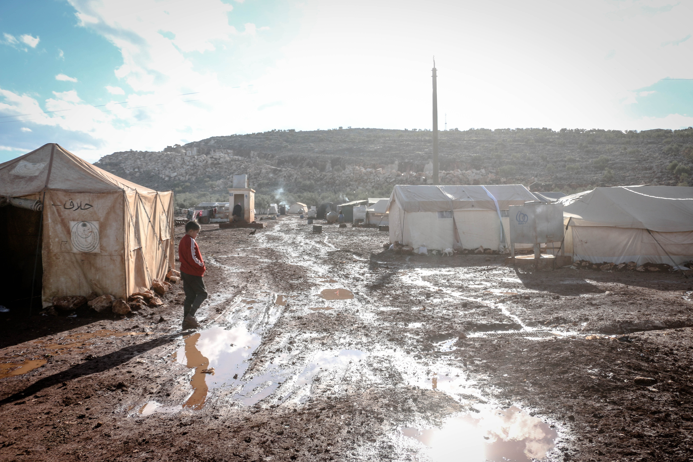

Typhoons, sometimes referred to as hurricanes or tropical cyclones, are powerful tropical storms that develop in the western Pacific Ocean close to the equator.
They can be identified by their strong, persistent winds that can reach 74 mph or more, heavy rainfall,
and storm surges that can badly damage property and endanger life.
Typhoons are powered by warm ocean temperatures, and high humidity provides the moisture required for cloud formation and precipitation. Its formation may be aided by atmospheric instability, which is brought on by the interaction of cold and warm air masses.
Typhoons have a big effect on the environment, infrastructure, and lives of people.
Typhoons can have a variety of effects, such as:
1. Damage to residences: The typhoon can leave thousands of homes in the province destroyed or seriously damaged, making many citizens homeless or unable to live in their homes.
2. Infrastructure damage: The typhoon can seriously damage roads, bridges, and other forms of infrastructure, making it challenging for relief efforts to reach impacted areas.
3. Economic Losses: Typhoons can have serious economic effects, such as crop loss, infrastructure damage, and disruption of corporate operations, which can result in big monetary losses.
4. Communication and power lines were damaged by the typhoon, leaving many towns without access to energy or telephone service.
5. Landslides and flooding: Storms may trigger landslides and flooding in several regions, which led to a number of fatalities and injuries.
|  |
Typhoon Health ConcernsIn addition to the significant physical damage that typhoons can cause, they can also bring about health risks to people, especially in the aftermath of the storm.
Some of the common illnesses associated with typhoons include: |
In addition, after addressing how typhoons affect people's lives, infrastructures, and the environment, the following topic is preparation prior to, during, and after a typhoon.
Develop an emergency plan: Have an emergency plan in place that includes evacuation routes, emergency shelters, and communication strategies with family members and friends.
Prepare an emergency kit: Prepare a kit that includes food, water, medicine, first-aid supplies, and important documents in case of evacuation.
Secure your property: Secure your property by reinforcing doors and windows, clearing gutters and drains, and trimming trees.
Stay indoors: Stay indoors and away from windows and doors during a typhoon. If you must leave, wear appropriate clothing and bring your emergency kit.
Listen to official alerts: Listen to official alerts and follow instructions from local authorities.
Evacuate if necessary: If authorities advise you to evacuate, do so immediately.
Assess damage: Assess damage to your property and prioritize repairs. Be cautious when entering damaged buildings and avoid electrical hazards.
Check on neighbors: Check on neighbors, especially the elderly or those with disabilities, and offer assistance if needed.
Report any hazards: Report any hazards or damage to local authorities, and avoid driving or walking through flooded areas.